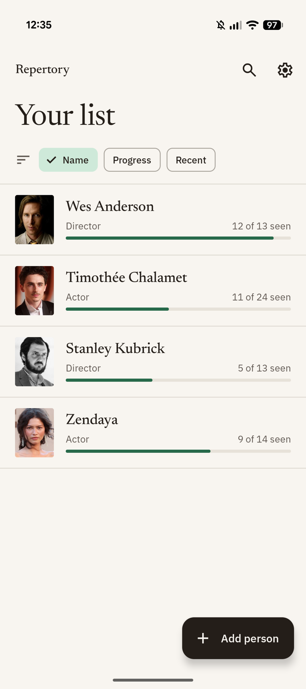
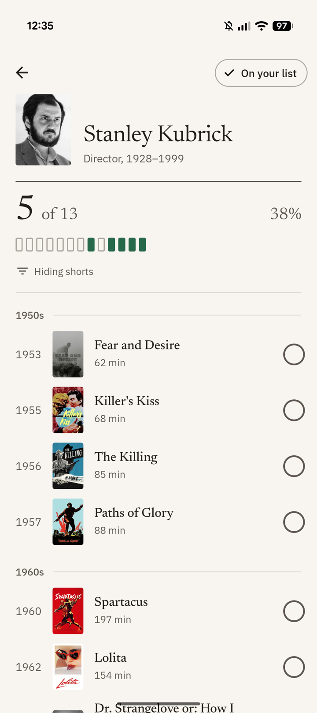
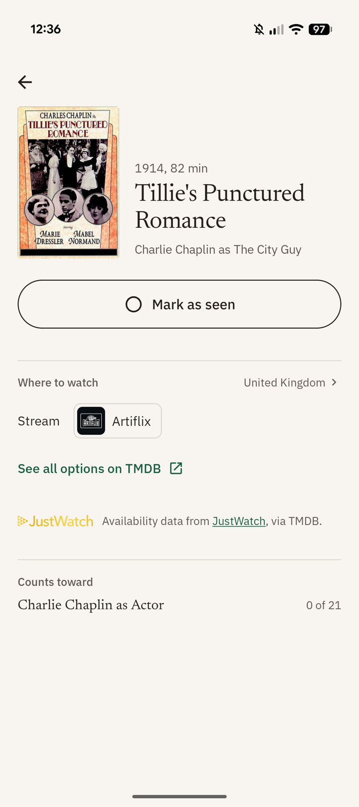
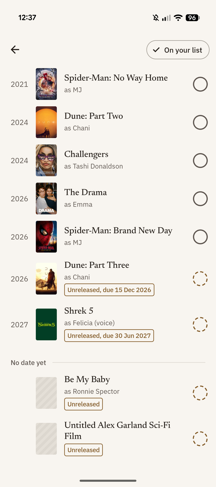

Repertory
Follow the directors and actors you care about, and work through their films one by one.

How it works
-
Pick a person
Search for a director or actor and add them to your list.
-
See their filmography
Every film in release order, grouped by decade.
-
Tick off what you've seen
Your progress updates as you go, so you always know what's left.
Features
Directors and actors
Follow anyone with a film credit. Kept up to date.
Progress at a glance
See how far through each filmography you are.
Count what counts
Choose to show or hide shorts, TV, cameos and minor roles.
Where to watch
Streaming options for your country.
Upcoming releases
Unreleased films and their due dates.
Light and dark
A dark theme for late screenings.
Preview


